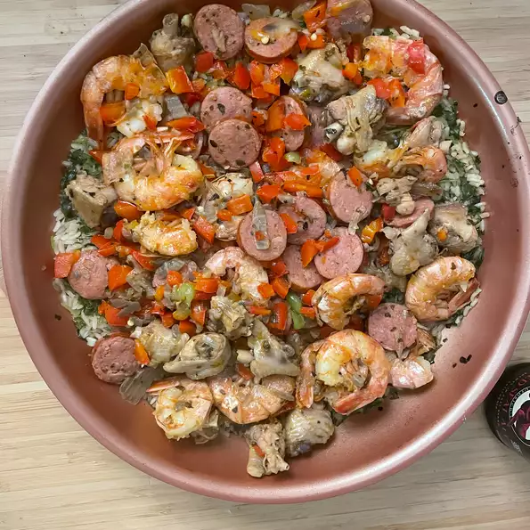

Paella

Description
Paella is a classic Spanish dish featuring saffron rice with chorizo, chicken, and seafood. This easy recipe marinades the chicken in paprika and oregano for added flavor and adds the shrimp at the last minute for fantastic results. Serve this delicious paella in the center of your table so everyone can dig in.
Ingredients
Marinade
- 2 tablespoons olive oil
- 1 tablespoon ground paprika
- 2 teaspoons dried oregano
- salt and ground black pepper to taste
Paella
- 2 pounds skinless, boneless chicken breasts, cut into 2 inch pieces
- 2 tablespoons olive oil, divided
- 3 cloves garlic, crushed
- 1 teaspoon crushed red pepper flakes
- 2 cups uncooked short-grain white rice
- 1 pinch saffron threads
- 1 large bay leaf
- ½ bunch Italian flat leaf parsley, chopped
- 1 quart chicken stock
- 2 medium lemons, zested
- 2 tablespoons olive oil
- 1 medium Spanish onion, chopped
- 1 medium red bell pepper, coarsely chopped
- 1 pound shrimp, peeled and deveined
- 1 pound chorizo sausage, casings removed and crumbled
Steps
- Mix olive oil, paprika, oregano, salt, and pepper for marinade in a glass bowl.
- Begin paella: Add chicken and stir to coat. Cover and refrigerate until needed.
- Heat 2 tablespoons olive oil in a large skillet or paella pan over medium heat.
- Stir in garlic and pepper flakes, then stir in rice.
- Cook and stir until rice is coated with oil, about 3 minutes.
- Add saffron threads, bay leaf, parsley, chicken stock, and lemon zest.
- Stir until well combined and bring to a boil.
- Reduce heat to medium-low, cover, and simmer for 20 minutes.
- While the rice is cooking, heat olive oil in a separate skillet over medium heat.
- Stir in marinated chicken and cook for 3 minutes.
- Add onion and cook until translucent, about 5 minutes.
- Add bell pepper and sausage; cook and stir, breaking sausage up with a spatula, for 5 minutes.
- Add shrimp; cook and stir until shrimp are bright pink on the outside and the meat is opaque, about 2 minutes.
- Spread rice mixture onto a serving tray. Top with meat and seafood mixture.
Return to Main Page